In my spare time I'm restoring an old but rather well-known game, Pharaoh. It's a city-builder released last century and developed by Impressions Games. The rendering technology in this game was a significant achievement for its time and helped create the striking atmosphere of Ancient Egypt — it immerses the player in a richly detailed setting, surprises you with its attention to small details, and conveys the richness and variety of ancient Egyptian landscapes. In this article I'll describe the algorithm for drawing the city, buildings, objects and animation, and the map format of the original game.
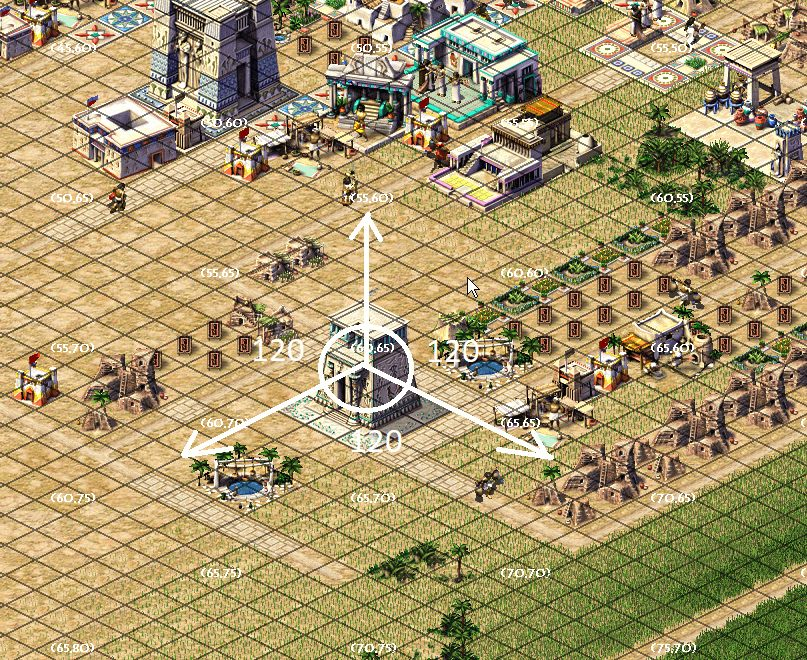
Drawing isometric maps
The classic scheme for drawing a map in isometry is laying out geometry along the X, Y, Z axes with equal angles between them. Strictly speaking, only such a rendering algorithm can be called isometric. Games use other kinds of axonometric projections too, where only two angles are equal or all three differ. But people, out of old habit, keep calling all of this isometry — let them have their fun, the main thing is that the games come out pretty. The Caesar/Pharaoh series, for example, uses the classic 120-120-120 scheme.
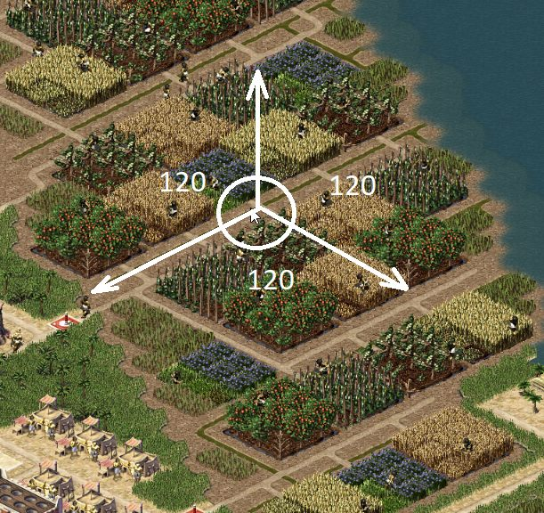
Why did the developers of the first games use this kind of rendering at all? Because it's cheap, and isometry gives the simplest tile shape, with a 2:1 aspect ratio.
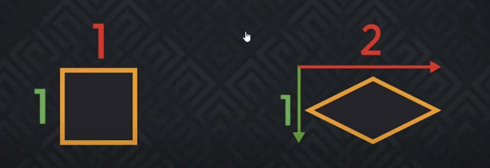
It's the easiest (apart from side and top views) to work with in 3D-modeling packages. Another advantage of rendering objects this way is that if we implement switching the map view, we won't have to make extra view textures for these objects from other sides.
There are other kinds of axonometric projection too, and all of them have left their mark on popular games to some degree. Most games got their memorable look because of the technical limitations of the tools of their time. In one interview Jason Anderson said that the engine of the first two Fallout games has its tile aspect ratio (5:3) because the Softimage 3D package was slow at rendering isometry, and once they bought Maya they decided not to redo it.
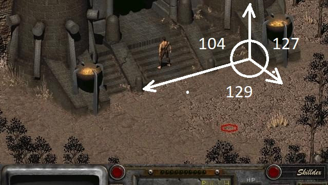
No less popular is the dimetric projection, where two of the three angles between the axes are equal, as in Civilization 2 or Age of Empires II.
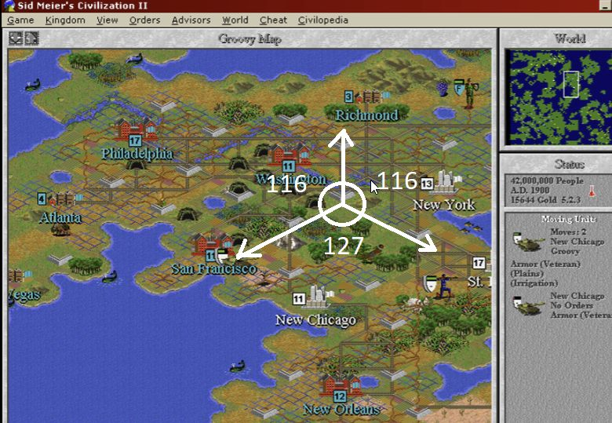
Or another no-less-popular view where the angle between the XZ axes is 90°, as in Ultima Online/Boktai.
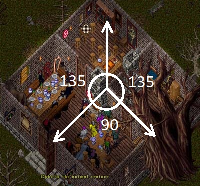
The projection in Stardew Valley is even cheaper, not assuming a third side for objects, which lets you make tiles right in Paint. According to Eric Barone, he really did draw the first location in Paint, then split it into squares and started working with them. A joke, of course! There are dedicated tools for creating this kind of view. It's very convenient for building open worlds and various kinds of indie games, when you don't have the budget for a 3D artist but plan a large amount of content. The main problem with isometric sprites is that they're awkward to scale: a sprite can only be drawn well for one distance, and attempts to zoom the camera in or out lead to various graphical artifacts.
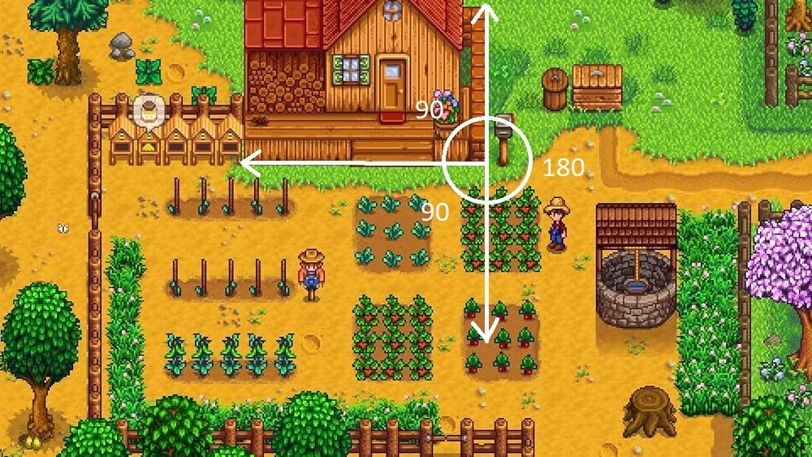
What is it?
In games where rendering is based on isometry (axonometry), each visual element is split into small pieces (tiles) of a certain size. The game world is built from such tiles based on level data (usually a 2D array, or arrays). The tiles are placed side by side in a certain order, and the edges are often noised to ensure seamless joins. Different tiles, for example, can form various shapes — this already looks like a primitive map.
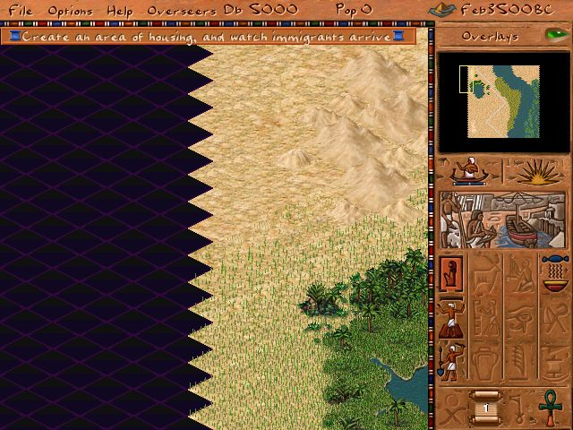
Textures, however, can't be non-rectangular, so the parts of a tile that shouldn't be displayed on screen are made transparent. Because of the technical limitations of the golden age of computer games, the operation of compositing transparent parts of textures was fairly expensive, so various techniques were used to cut transparent pixels. The base tile in Pharaoh is 60×30 pixels — that's the minimum tile size the game engine can display without distortion or errors. The original Pharaoh uses pixel clipping at the rendering stage; in the remake textures are converted to a format with transparency, which happens at the resource-loading stage.
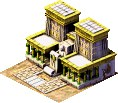
Since the first isometric games, basic rules for such maps have been established that help avoid overloaded rendering algorithms.
- The isometric grid should be square to simplify the rendering algorithm.
- Tiles should be small, no more than 90 pixels wide — beyond that the number of transparent pixels becomes a problem for software clipping.
- The graphics should split cleanly into simple isometric images that don't spill beyond the tile, otherwise draw-order errors appear, greatly complicating rendering.
- A tile should ideally be either walkable or non-walkable. Otherwise it's hard to work with tiles containing both walkable and non-walkable areas, which again greatly complicates rendering — and as we recall, it was 90% software.
- Tile edges should ideally be seamless so they can be joined regardless of order, otherwise you'll need tile-joining algorithms.
- Shadows are hard to create, and you have to make a second set of textures that are drawn first on the ground layer, with the object itself drawn on the top layer afterwards. Shadows in the game were still tricky — the renderer didn't support layers, so shadows were baked straight into the textures.
There are two main algorithms for drawing a map in isometry: diagonal-path and zig-zag-line.
Diagonal-path
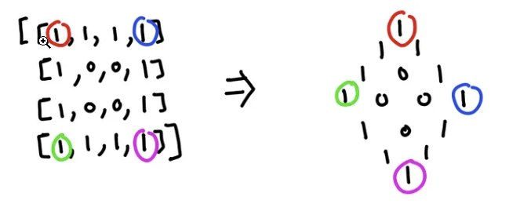
The first one is simpler to implement; its code for drawing and pathfinding is quite simple (assuming the map is a 2D array), but it has an unpleasant property: there are empty areas along the map's edges, and you have to either fill them with non-gameplay tiles or just leave them as is. The drawing algorithm for such a map is as simple as can be — we draw tiles diagonally top to bottom, and so on for each row of the array.
Show code
map = [
[1, 1, 1, 1],
[1, 0, 0, 1],
[1, 0, 0, 1],
[1, 1, 1, 1],
];
for (y = 0; y < map.size; y++) {
for (x = 0; x < map[y].size; x++) {
screen_x = (x * tile_width / 2) - (y * tile_width / 2)
screen_y = (x * tile_height / 2) + (y * tile_height / 2)
// Draw tile (screen_x, screen_y)
}
}We end up with a picture like this.
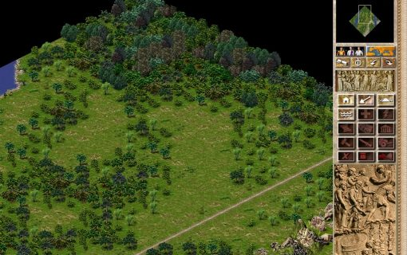
Zig-Zag-Line
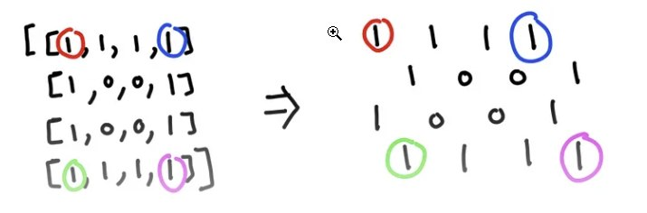
It's better suited to rectangular screens, doesn't differ too much in code, and looks better — so it's no surprise the authors ended up choosing it for the game. Unfortunately it has a drawback too: a path from one point to another may require diagonal moves, and pathfinding algorithms have to be adapted to work on such a map. The idea is to offset x by the tile width for each new tile in a row and increase y by half the tile height for each new row; but if the row index is odd, you additionally have to shift x left by half a tile width to avoid overlapping the new row onto the one already drawn. The pseudocode is as follows:
Show code
map = [
[1, 1, 1, 1],
[1, 0, 0, 1],
[1, 0, 0, 1],
[1, 1, 1, 1],
];
for (y = 0; y < map.size; y++) {
for (x = 0; x < map[y].size; x++) {
screen_x = x * tile_width + (y & 1 ? tile_width / 2 : 0);
screen_y = y * tile_height / 2 - (sprite_height - tile_height);
}
}We end up with a picture like this.
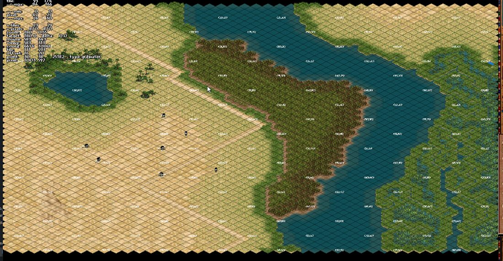
An animation of how both algorithms work.
On to drawing the city
Besides the ground tiles themselves, the map has buildings, animations of static objects, and also moving objects (people, animals and others). There are objects you can pass through (an arch, gates, bridges relative to ships), there are objects placed on top of other objects (and the renderer must account for this) — bridges, for example. Additional animation of tiles and objects, such as water or canal tiles. Ultimately the map can hold non-square objects whose display has its own peculiarities too, because they can't be drawn in a single pass. All of this complicates the rendering process and requires additional rules and conditions.
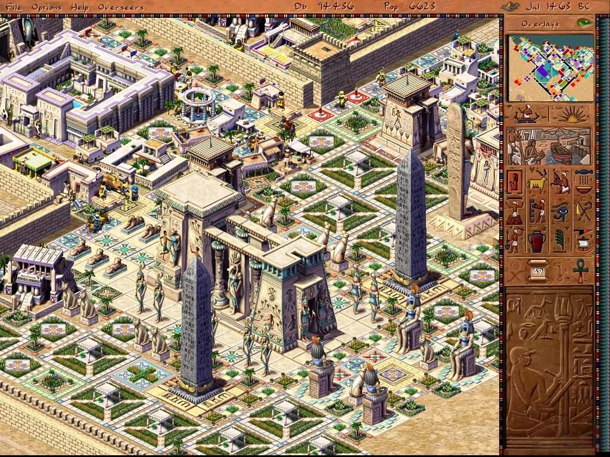
Depth sorting
If you try to draw several objects on a single tile, you'll notice a depth-sorting problem. Correct sorting guarantees that objects closer to the player are drawn on top of more distant ones. At the level of tile coordinates this is solved by the drawing algorithm, but at the tile level you have to resort to additional sorting by the Y coordinate: the higher an object is on the screen, the earlier it should be drawn. This works decently for any objects in the scene but requires an extra pass when rendering. Below is a schematic of how this might look if we treat the cells as pixels within a tile.
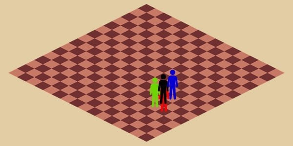
No sort order.
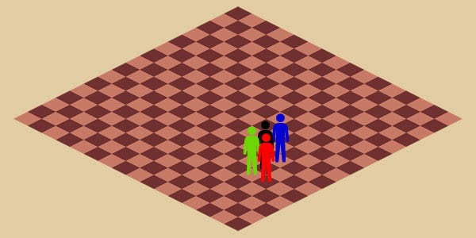
Sorting by the Y coordinate.
A more advanced display technique, used in later games of the series, is layer technology, where each type of object was drawn on its own layer (ground, trees, people, buildings, etc.); the larger the object, the higher the layer it used for drawing. These layers were then composited to produce the final image. This technology appeared partly in Zeus and fully blossomed in Emperor, but required significantly more memory. In Emperor, for example, 8 map layers were used (ground/water, ground effects, people, large ground objects, buildings, monuments, building effects, effects). Each layer required as much memory as the main layer. If you've played Zeus/Emperor, you may have noticed they have far fewer display artifacts than the games before them. On top of that, Emperor had a layer for shadows, so the picture looks more natural.
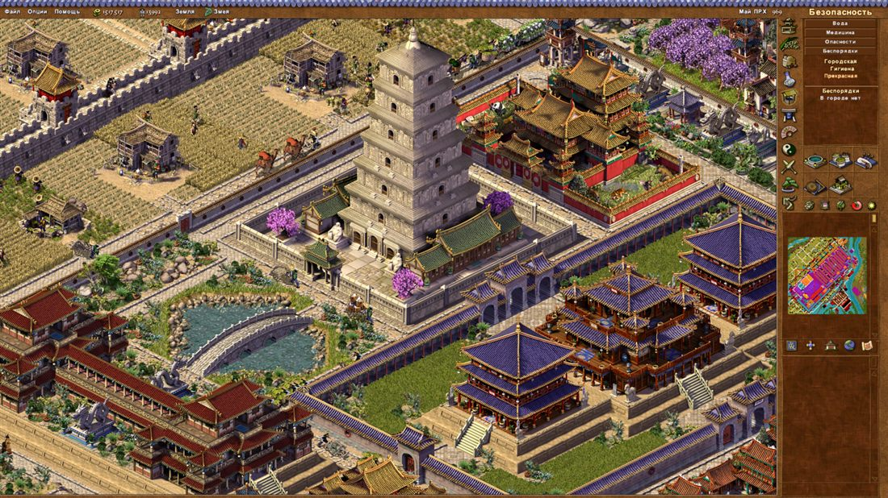
The problems with drawing objects don't end there: the more space an object takes up on the map, the more visible the display artifacts along its edges. On top of that, the percentage of pixels that have to be clipped during texture compositing becomes a performance problem. In this case developers usually cut a large texture into several smaller ones, and a composite object appears that may not have a proper diamond shape. A size of 4×4 tiles is considered the maximum for displaying a large object.
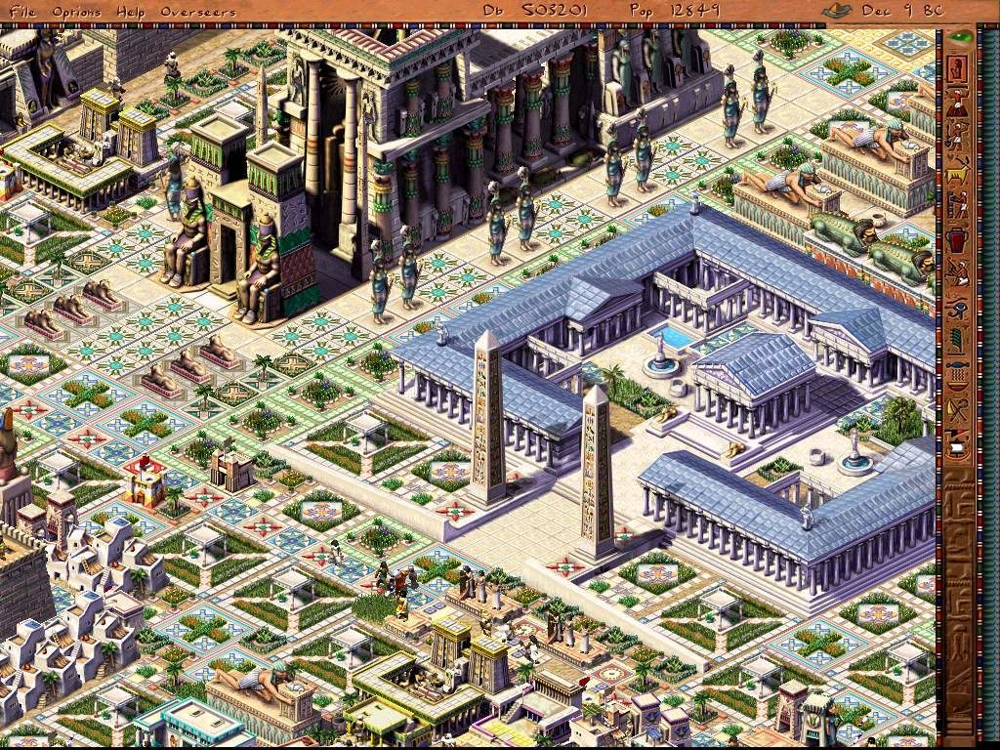
A composite building.
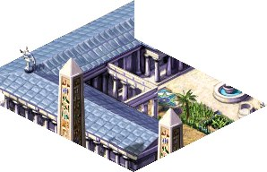
A part of a building fitted to a 4×4 tile size.
Pharaoh's map format
The map size in the game is always N (228×228) tiles, but it may be only partially filled, which creates the impression that all maps are of different sizes. The map consists of many 2D arrays of the corresponding size (int, short or char), each holding a particular set of tile properties.
The following arrays are read one after another from the map file.
Show format
UINT32 images[N] - texture index from the atlas
UINT8 edges[N] - tile edges; since the map may be smaller than the maximum,
this is how the position of edge tiles is determined;
the array is left over from Caesar2 and is barely used
UINT16 buildings[N] - array of building indices; the buildings themselves are stored
in another array of no more than 4000 elements
UINT32 terrain[N] - array of land-type bits (road, gardens, canal, field, water, etc.)
UINT8 canals[N] - array of irrigation-system tiles; canals can be placed
on top of ground tiles
UINT16 figures[N] - array of the starting figure index on a tile; the array of figures
on a tile is a linked list, each figure has a reference to the next
UINT8 sprite[N] - array of the current animation index, added to the base one from
images for dynamic tiles like water or trees
UINT8 random[N] - a random number set at map start, used during land clearing
to randomly update tiles
INT8 desirability[N]- used by houses to determine how good the surroundings are
UINT8 elevation[N] - elevation level, used for bridges and large objects to
correctly display objects above the ground
UINT16 damage[N] - damage level; used in Caesar for ruins, but kept in Pharaoh
so as not to break the format
UINT8 canal_backup[N]- undo array to support the build-undo function
UINT8 floodplain_fertility[N] - array of tile fertility, where farms can be built
UINT8 vegetation_growth[N] - array of grass and tree growth progress, for tiles where
that's possible; the tree-growth algorithm itself isn't used in Pharaoh
UINT8 moisture[N] - array of the water level in a tile
UINT8 floodplain_growth[N] - grass growth progress on fertile tiles near the river
and a few more auxiliary onesThis format remained practically unchanged from Caesar2 and Caesar3. Later, in Pharaoh, the chunk-based save format started gaining popularity, where first comes the chunk type (a data block), and then the data is saved in a particular format — for example a building, a tile, a figure, etc.
Such a format is definitely more convenient for storing heterogeneous data of varying size. The reasons for using a format based on fixed-size arrays are simple: they map perfectly onto memory and require no extra processing — the guys were using ECS before it was cool. When you need to load enormous (for the games of the time) maps, this was one of the solutions to avoid waiting 5 minutes on a level load. The second reason for using this format was the need to quickly share data between a large number of map objects: land-desirability data, for example, is shared between several houses without requiring a lookup in the tile array.
The main tile information on the map is stored in the images array; the game's algorithms change texture indices in this array, and they're updated on the next frame. Buildings placed on the map can change indices within their area, with 1–2 animation layers usually composited on top.
UINT32 images[] — texture index from the atlas
The main array for displaying tiles on the map: any change in the city's life was reflected on the map. Be it grass growing, animation in water tiles, or harvesting crops from farms.
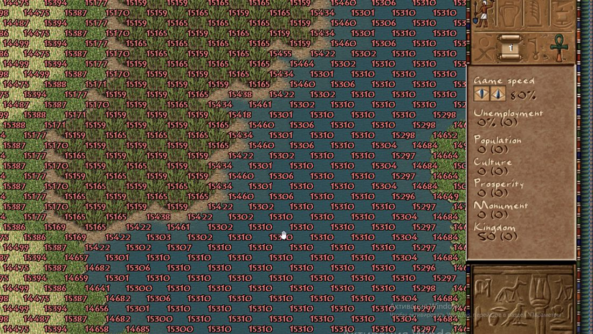
UINT16 buildings[] — array of building indices
The green tiles mark the building's main tile, from which road access is computed, to which a path is built from any point on the map, and from which the available actions on the building's area are computed.
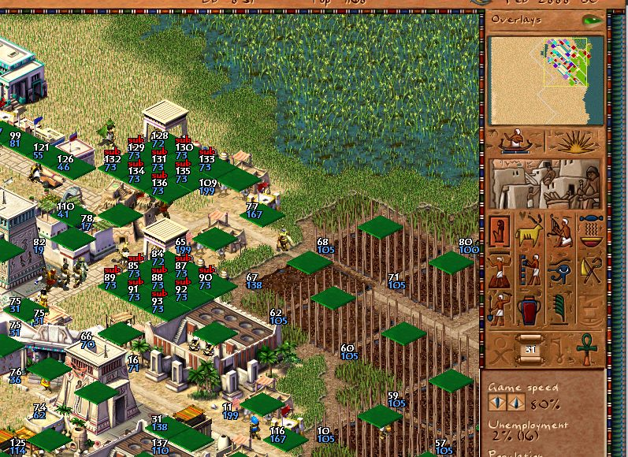
UINT32 terrain[] — array of land-type bits
The presence of roads defines the graph of cart movement around the city, with nodes at intersections; removing or creating roads triggers its rebuild. This was especially noticeable in the late game with a branching road system — players preferred to build long straight stretches to speed up the computation of citizens moving around the city. Nowadays, of course, the millions of horsepower under the hood the megahertz are enough to handle any possible graph.
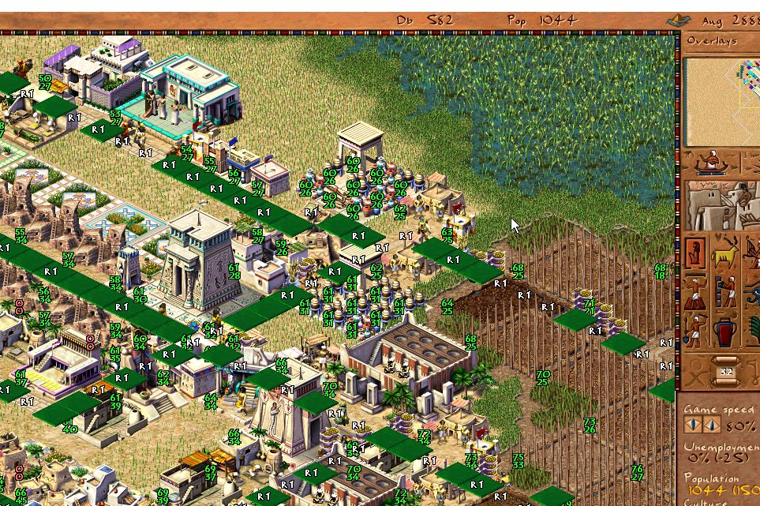
UINT8 moisture[] — array of the water level in a tile
As you can see, visually in the game it overlaps with grass density — or its absence, if there's no water on the tile.
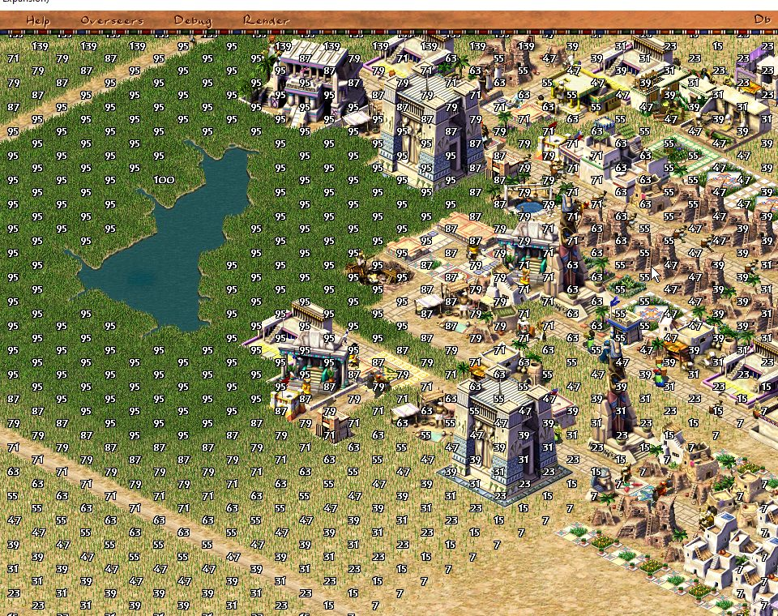
UINT8 floodplain_fertility[] — array of tile fertility
The values in this array determine how much harvest will be gathered from a farm. Using farms lowers this parameter, so over time a farm yields less and less produce. The Nile's floods replenish this value.
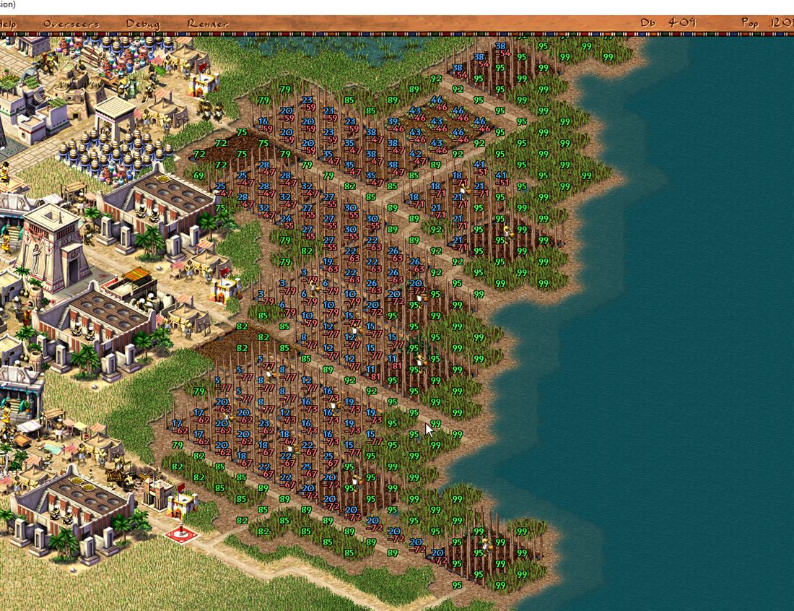
As you can see, no magic — just bare numbers.
Conclusion
To wrap up this article on how the map is drawn in the game, I want to note that even nearly a quarter-century later, "Pharaoh" remains popular among strategy fans. The game stays a classic exemplar of the city-builder genre and an example of how outstanding design and excellent visual style continue to delight and inspire players years and years after release. And even the launch of the failed remake by Triskell Interactive couldn't dampen the community's interest in the good old Pharaoh. Honestly, I was really looking forward to the remake, actively taking part in discussions with the developers, but when I realized the game was heading toward ever more simplification, I kind of lost my enthusiasm. And when rumors recently came from Triskell that they're working on a mobile port and an f2p mode, I got thoroughly upset.
If you want to see how it all works in code and blow the dust of ages off 25-year-aged legacy code — join the repository github.com/dalerank/Ozymandias. The game isn't 100% restored yet, but it's getting there.
I've also made a regularly updated build at dalerank.itch.io/ozymandias — if you don't feel like compiling the game for your OS, you can grab a ready build. You'll need the resources from the original, of course; we're not pirates after all.
← All articles